Desarrollo web
HTML · CSS · JavaScript · PHP
PORTAFOLIO DE DESARROLLO
Estudiante de Tecnologías de la Información enfocado en crear experiencias web, aplicaciones móviles y soluciones de software.
02 — LO QUE UTILIZO
HTML · CSS · JavaScript · PHP
Kotlin · Jetpack Compose · Android Studio
Java · C++ · Programación orientada a objetos
MySQL · SQLite · Diseño de bases de datos
Sockets · RMI · gRPC
Linux · Terminal · Configuración de servicios
03 — TRABAJO SELECCIONADO
Cada proyecto incluye una galería de tres imágenes. Usa las flechas para recorrer las capturas.
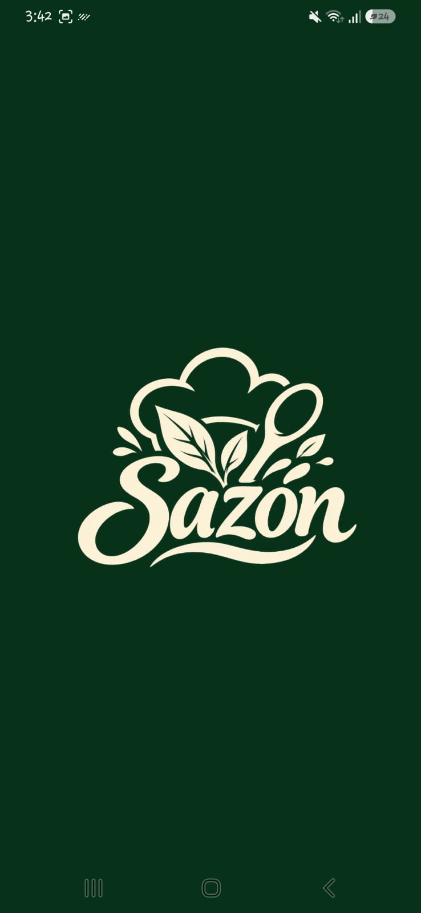
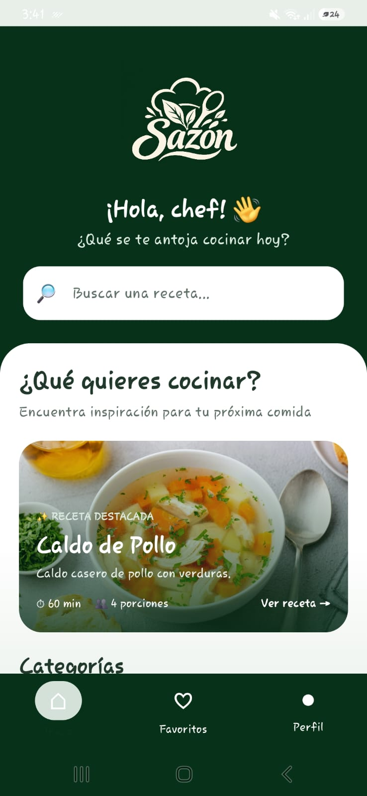
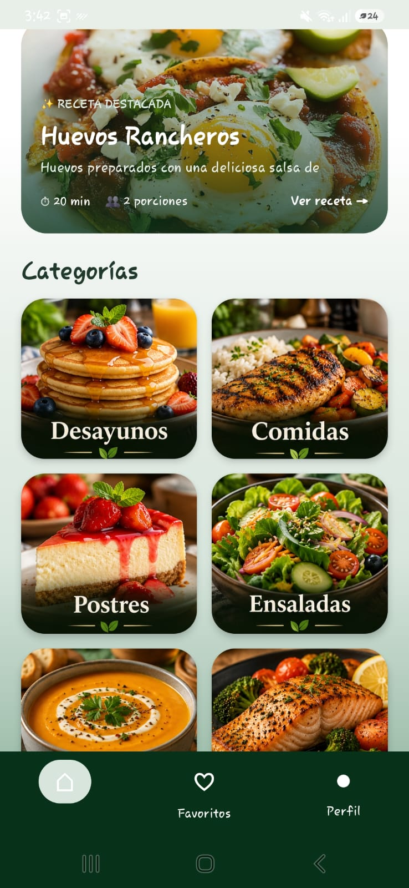
APP MÓVIL / 01ANDROID · KOTLIN
Aplicación móvil de recetas con categorías, imágenes y pantallas para consultar ingredientes y preparación.
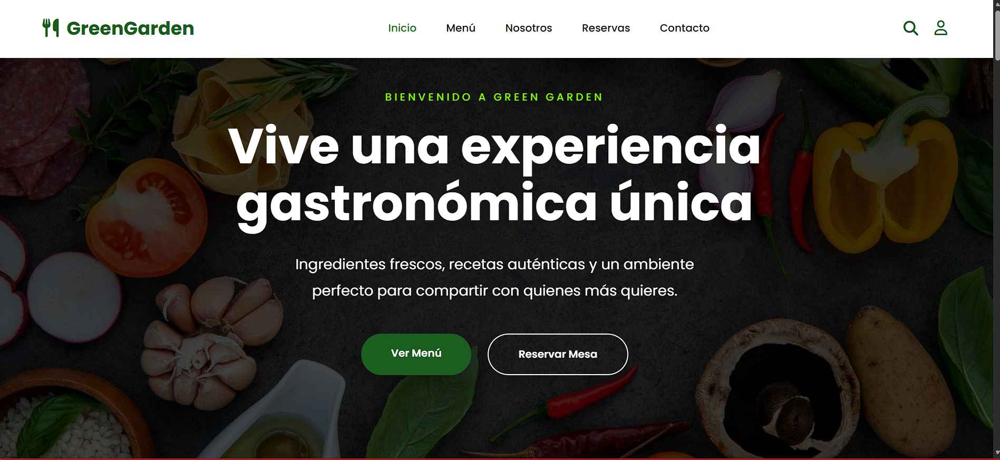
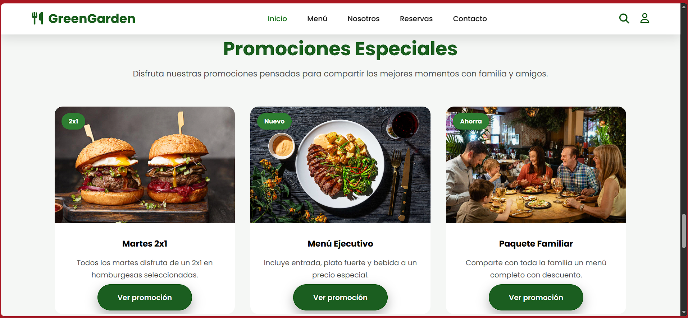
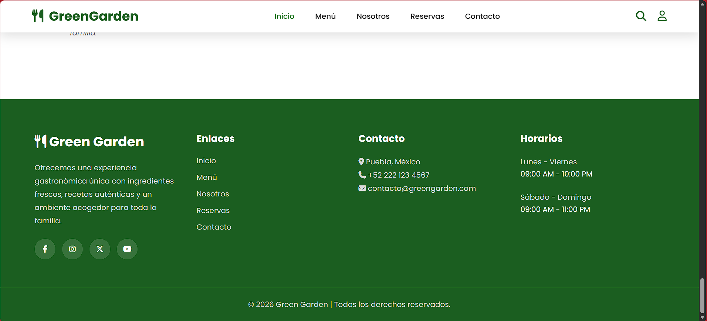
SITIO WEB / 02DESARROLLO WEB
Sitio web para un restaurante, diseñado para presentar su oferta gastronómica y facilitar la consulta de productos y servicios.
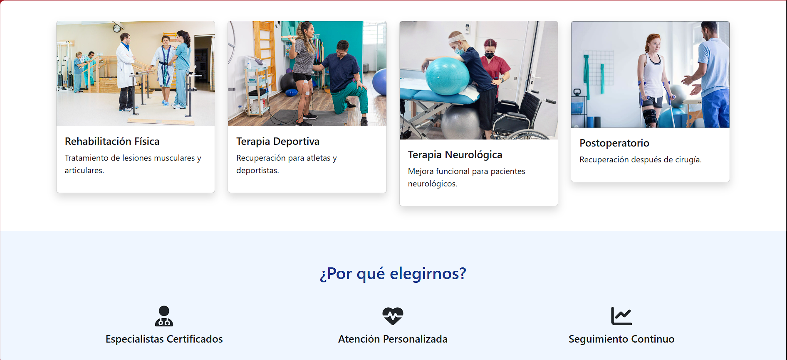
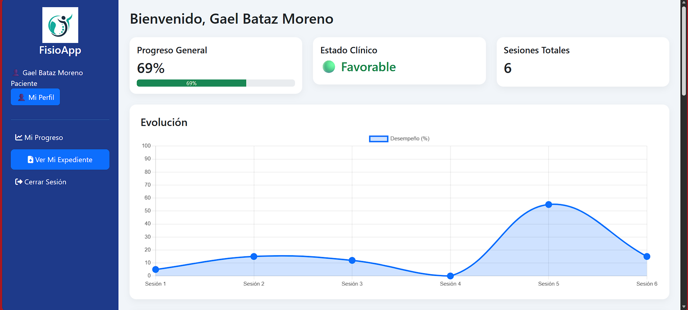
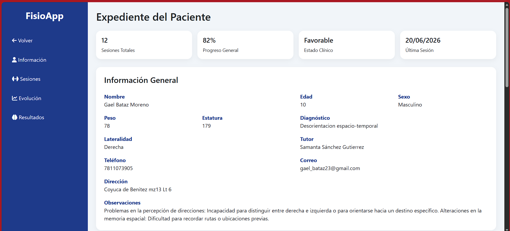
SISTEMA WEB / 03GESTIÓN DE PACIENTES
Sistema web para registrar pacientes, consultar expedientes y organizar sesiones de fisioterapia.
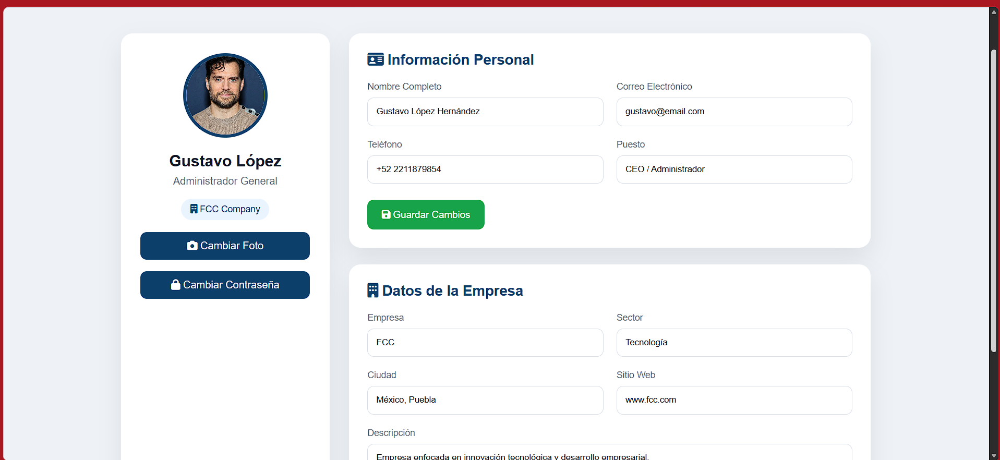
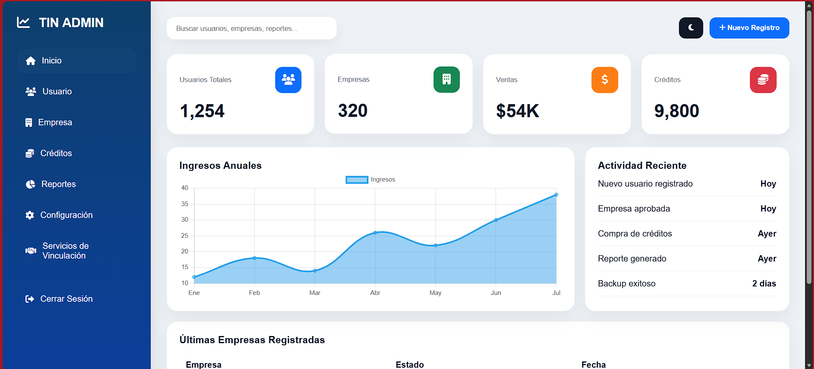
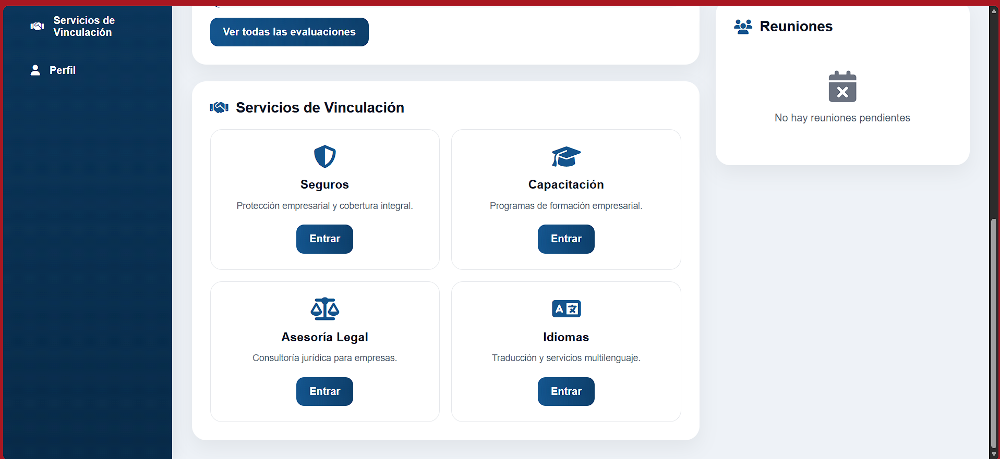
SERVICIOS TI / 04ASESORÍA TECNOLÓGICA
Orientación para identificar necesidades tecnológicas y proponer soluciones relacionadas con páginas web, software y sistemas informáticos.
04 — MI CAMINO
Benemérita Universidad Autónoma de Puebla
EN FORMACIÓN05 — CONTACTO
Estoy abierto a conversar sobre oportunidades, colaboraciones y proyectos tecnológicos.